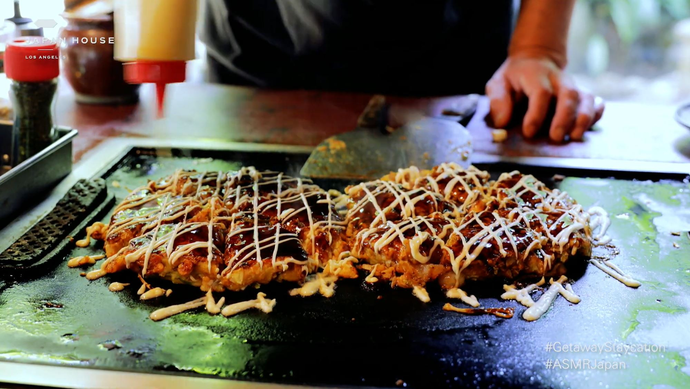

Japanese Street Food: Okonomiyaki

Description
Okonomiyaki (お好み焼き) is a popular pan-fried dish that consists of batter and cabbage. Selected toppings and ingredients are added which can vary greatly (anything from meat and seafood to wasabi and cheese). This variability is reflected in the dish's name; "okonomi" literally means "to one's liking".
Okonomiyaki is sometimes translated into English as "as-you-like-it pancake". However, this may be misleading. Though it does consist of batter cooked on a griddle, okonomiyaki has nothing of the sweetness or fluffiness of pancakes, not to mention that it is usually filled with octopus, shrimp, pork, yam or kimchi. A more accurate comparison,
which is also made, is between okonomiyaki and pizza. Without a doubt, this recipe's version of Okonomiyaki will be perfect for a light yet fulfilling breakfast.
Ingredients
- 3 packed cups finely shredded cabbage, about ½ medium*
- 1¼ cups chopped scallions, about 1 bunch
- 1 cup panko breadcrumbs
- ¾ teaspoon sea salt
- 3 large eggs, beaten
- Extra-virgin olive oil, for brushin
Steps
- In a large bowl, combine the cabbage, scallions, panko, and salt. Gently mix in the eggs. (Note: the mixture will be very loose and cabbagey, not like a flour pancake batter. If it's very dry, let it sit for 10 minutes).
- Heat a nonstick skillet over medium heat. Brush the skillet with olive oil and use a ¼ measuring cup to scoop the cabbage mixture into the skillet. (It's ok if it doesn't seem cohesive, it'll bind together as the egg cooks). Flatten gently with a spatula so that the mixture is about 1/2 inch thick. Cook for 3 minutes per side, or until browned, turning the heat to low as needed.
- Repeat with the remaining mixture, wiping out the skillet and brushing with more oil as needed.
- Drizzle the okonomiyaki with Worcestershire sauce and thin strips of squeezed mayo. Top with sesame seeds, pickled ginger, and nori. Sprinkle with microgreens, if desired. Serve hot.